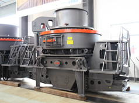
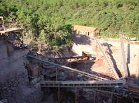
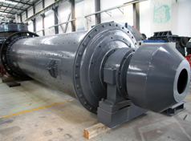
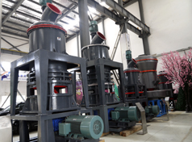
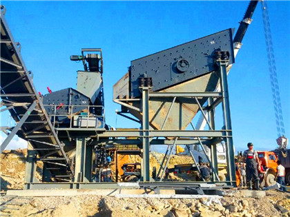
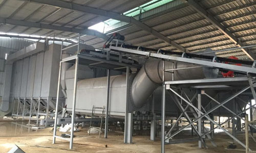
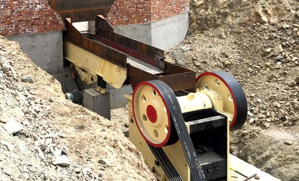

Chalk Powder Making Machine
- 
Green Crushers Show More Competitiveness in the Market
SBM has been devoted to the research and development on the crushing equipment and we have made much contribution to the increasing status of the crushers made by the Chinese enterprises. As for the environment protective products, our experts have never stopped making effort to improve the technology and product performance of the mining machines especially the crushers.
View more details > - 
High Efficiency Dryers Are Welcome in the Market
As the leader in the Chinese mining machinery industry, our company is well known for its various types of mining machines including dryers, stone crushing machines, ore dressing machines and powder making machines applied around the world.
View more details > - 
How Can We Improve the Performance of Ball Mills?
The ball mill is the core device used to grind materials after the crushing process. According to our experts, there are many factors that will make much effect on the working efficiency of the ball mill.
View more details > - 
How to Maintain Zip-top Can Crusher
As for commonly metal crusher, when changing the head or the corner, all the hammers should be changed at the same time to maintain the balance of the rotor. If the four corners are all abraded, new hammers should be used, and the arrangement patterns should conform to the stipulation of the instruction. The quality different of every group of hammers should not exceed 5g, and some can crushers may lose balance and have serious vibration due to uneven abrasion. Then the static balance of the rotor should be revised, and in the meantime, rearrange the hammers or change new hammers.
View more details > - 
Norwegian Granite Marble Crusher
Stone crushing plant is ideal for crushing of significant scale sandstone , soapstone , granite , limestone, basalt, marble, quartzite, slate, travertine, lava, andesite, feldspar, onyx and so forth.
View more details > -

Garnet Crushing Plant
Because the chemical composition of garnet varies, the atomic bonds in some species are stronger than in others. As a result, this mineral group shows a range of hardness on the Mohs scale of about 6.5 to 7.5 which is the right hardness our garnet crusher and garnet grinding mill can process. The harder species, like almandine, are often used for abrasive purposes.
View more details > - 
Silexite Graphite Processing Equipment
According to the structure of graphite in nature, graphite ores are classified as crystalline (vein), flake and amorphous [1]. Graphite is used mainly for foundry facings, refractories, lubricants, pencils, batteries, brake linings, bearings, conductive coatings and crucibles.
View more details > -

bauxite beneficiation process
According to the structure of graphite in nature, graphite ores are classified as crystalline (vein), flake and amorphous [1]. Graphite is used mainly for foundry facings, refractories, lubricants, pencils, batteries, brake linings, bearings, conductive coatings and crucibles.
View more details > - 
Small Jaw Crusher
A small scale mobile jaw-crusher unit has been designed, manufactured and tested by SBM. The small jaw crusher is aimed at reducing the drudgery and hardships faced by artisanal miners.
View more details >